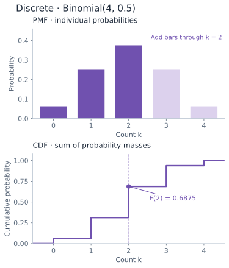
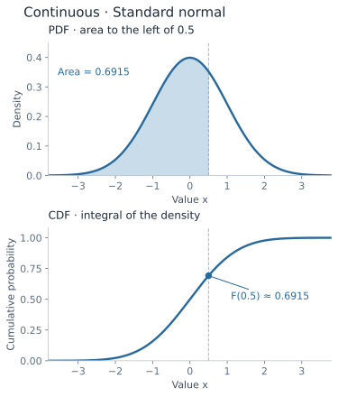
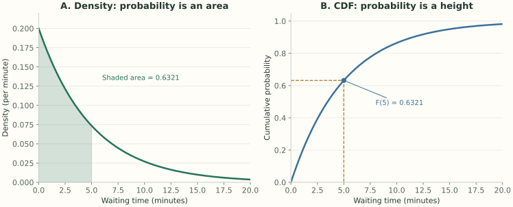

Random Variables & Distribution Transformations
Measurable mappings, Cumulative Distribution Functions, Probability Density/Mass Functions, canonical discrete and continuous distributions, and the Jacobian method for variable transformations.
CDF, PDF & PMF Foundations
Given a probability space $(\Omega, \mathcal{F}, \mathbb{P})$, a real-valued random variable $X$ is a measurable function mapping outcomes from the sample space to the real line:
Measurability requires that for every Borel set $B \in \mathcal{B}(\mathbb{R})$, the preimage satisfies $X^{-1}(B) = \{\omega \in \Omega : X(\omega) \in B\} \in \mathcal{F}$.
The Cumulative Distribution Function (CDF)
The Cumulative Distribution Function $F_X: \mathbb{R} \to [0, 1]$ completely characterizes the probabilistic behavior of $X$:
Every CDF satisfies three fundamental mathematical properties:
- Monotonicity: If $x_1 < x_2$, then $F_X(x_1) \le F_X(x_2)$.
- Right-continuity: $\lim_{h \to 0^+} F_X(x + h) = F_X(x)$ for all $x \in \mathbb{R}$.
- Asymptotic limits: $\lim_{x \to -\infty} F_X(x) = 0$ and $\lim_{x \to +\infty} F_X(x) = 1$.


Quantiles and Medians
For any $p \in (0, 1)$, the $p$-th quantile (or generalized inverse CDF) is defined as:
The median $m$ is the $0.5$-quantile satisfying $\mathbb{P}(X \le m) \ge 0.5$ and $\mathbb{P}(X \ge m) \ge 0.5$.
Main Discrete Probability Distributions
A random variable is discrete if its support $\text{supp}(X)$ is countable. Its behavior is defined by the Probability Mass Function (PMF) $p_X(x) = \mathbb{P}(X = x)$ where $\sum_x p_X(x) = 1$.
Discrete Uniform: $\mathcal{U}\{a, b\}$
Equally likely integers in the range $\{a, a+1, \dots, b\}$ ($N = b - a + 1$):
Binomial: $\text{Bin}(n, p)$
Number of successes in $n$ independent Bernoulli trials with parameter $p$:
Poisson Distribution: $\text{Pois}(\lambda)$
Models counts in an interval under a Poisson process: disjoint intervals have independent counts, and $\lambda > 0$ is the expected count in the chosen interval:
Let $X_n \sim \text{Bin}(n, p_n)$ such that as $n \to \infty$, $p_n \to 0$ with $n p_n = \lambda$ held constant:
Proof: Substitute $p_n = \lambda/n$ into the Binomial PMF:
$$\binom{n}{k} \left(\frac{\lambda}{n}\right)^k \left(1 - \frac{\lambda}{n}\right)^{n-k} = \frac{n(n-1)\cdots(n-k+1)}{k!} \frac{\lambda^k}{n^k} \left(1 - \frac{\lambda}{n}\right)^n \left(1 - \frac{\lambda}{n}\right)^{-k}$$
Group the polynomial factors: $\frac{n(n-1)\cdots(n-k+1)}{n^k} = 1 \cdot \left(1 - \frac{1}{n}\right) \cdots \left(1 - \frac{k-1}{n}\right) \xrightarrow{n \to \infty} 1$.
By Euler's limit definition: $\lim_{n \to \infty} \left(1 - \frac{\lambda}{n}\right)^n = e^{-\lambda}$, while $\lim_{n \to \infty} \left(1 - \frac{\lambda}{n}\right)^{-k} = 1$.
Combining all limits yields $\frac{\lambda^k e^{-\lambda}}{k!}$. $\blacksquare$
Main Continuous Probability Distributions
A variable $X$ is absolutely continuous when it has a nonnegative Probability Density Function (PDF) $f_X$ such that $F_X(x)=\int_{-\infty}^x f_X(t)\,dt$. Then $f_X(x)=F_X'(x)$ almost everywhere and $\mathbb{P}(a\le X\le b)=\int_a^b f_X(x)\,dx$. Differentiability of the CDF almost everywhere, by itself, is not enough to guarantee a density.
Continuous Uniform: $\mathcal{U}(a, b)$
Mean $\mu = \frac{a+b}{2}$, Variance $\sigma^2 = \frac{(b-a)^2}{12}$.
Exponential: $\text{Exp}(\lambda)$
Memoryless: $\mathbb{P}(X > s + t \mid X > s) = \mathbb{P}(X > t)$.
Normal (Gaussian): $\mathcal{N}(\mu, \sigma^2)$
Symmetric about mean $\mu$; inflection points at $\mu \pm \sigma$.
Bivariate Normal: $\mathcal{N}_2(\boldsymbol{\mu}, \boldsymbol{\Sigma})$
Conditional distribution: $Y \mid X=x \sim \mathcal{N}\left(\mu_Y + \rho\frac{\sigma_Y}{\sigma_X}(x - \mu_X),\, \sigma_Y^2(1 - \rho^2)\right)$.
Random Variable Transformations & The Jacobian Method
The 1D Change-of-Variables Formula
Let $X$ be a continuous random variable with PDF $f_X(x)$, and let $Y = g(X)$ where $g: \mathbb{R} \to \mathbb{R}$ is strictly monotonic and continuously differentiable on the support of $X$, with $g'(x)\ne0$ in its interior. The PDF of $Y$ is given by:
Let $X \sim \mathcal{N}(\mu, \sigma^2)$ and let $Y = aX + b$ with $a \ne 0$.
Derivation: Here $g(x) = ax + b$, so $x = g^{-1}(y) = \frac{y - b}{a}$. The Jacobian derivative is $\frac{d}{dy}g^{-1}(y) = \frac{1}{a}$. Applying the transformation formula: $$f_Y(y) = \frac{1}{\sigma \sqrt{2\pi}} \exp\left( -\frac{\left(\frac{y - b}{a} - \mu\right)^2}{2\sigma^2} \right) \cdot \left|\frac{1}{a}\right| = \frac{1}{|a|\sigma \sqrt{2\pi}} \exp\left( -\frac{(y - (a\mu + b))^2}{2 a^2 \sigma^2} \right)$$ This confirms analytically that $Y \sim \mathcal{N}(a\mu + b, \, a^2\sigma^2)$. $\blacksquare$
Let $X \sim \text{Exp}(1)$ with PDF $f_X(x) = e^{-x}$ ($x > 0$) and consider the transformation $Y = -\ln(X)$.
Derivation: The mapping $g(x) = -\ln(x)$ is strictly decreasing. Its inverse is $x = g^{-1}(y) = e^{-y}$ with derivative $\frac{dx}{dy} = -e^{-y}$. The Jacobian is $|-e^{-y}| = e^{-y}$.
Applying the change-of-variables theorem:
$$f_Y(y) = f_X(e^{-y}) \cdot \left| -e^{-y} \right| = e^{-e^{-y}} \cdot e^{-y} = \exp\left( -y - e^{-y} \right), \quad y \in \mathbb{R}$$
The corresponding Cumulative Distribution Function is:
$$F_Y(y) = \mathbb{P}(-\ln(X) \le y) = \mathbb{P}(X \ge e^{-y}) = 1 - F_X(e^{-y}) = e^{-e^{-y}} = \exp\left(-e^{-y}\right)$$
This is the analytical density of the standard Gumbel (Type I Extreme Value) Distribution, widely used in financial risk modeling and extreme value theory. $\blacksquare$
Worked example · From density to probability
How long until the next arrival?
In a simplified model, arrivals follow a homogeneous Poisson process at a rate of $\lambda=0.2$ per minute. The waiting time is $T\sim\mathrm{Exp}(0.2)$. This assumes a constant arrival rate and independent increments; it is an illustrative model, not observed queue data.
The chance of an arrival within five minutes is the area under the density from 0 to 5, or equivalently the CDF at 5:

| Quantity | Calculation | Minutes |
|---|---|---|
| Mean | $1/\lambda$ | 5.00 |
| Median | $\ln(2)/\lambda$ | 3.47 |
| 90th percentile | $-\ln(0.10)/\lambda$ | 11.51 |
Remember: Density height is not a probability. Here $f_T(5)\approx0.0736$ per minute, while $\mathbb{P}(T=5)=0$ and $\mathbb{P}(T\le5)\approx63.2\%$.